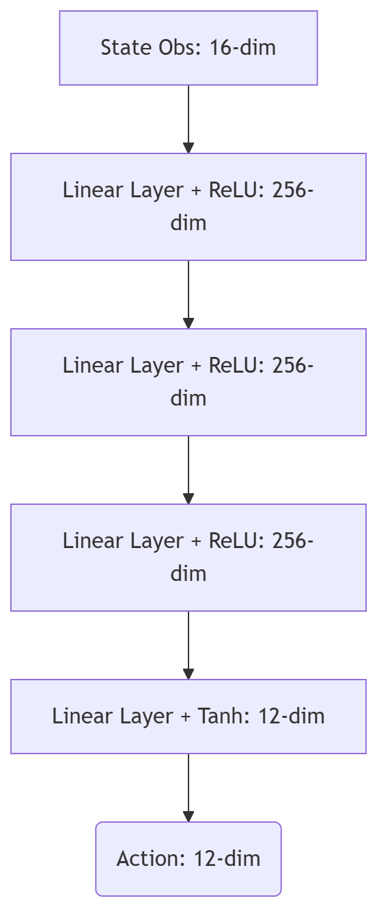
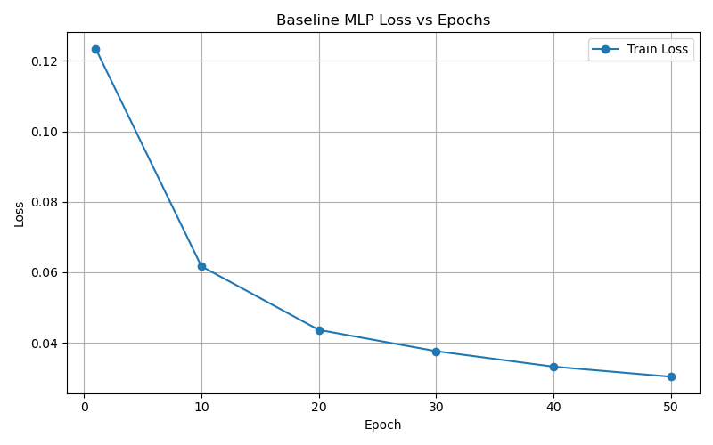
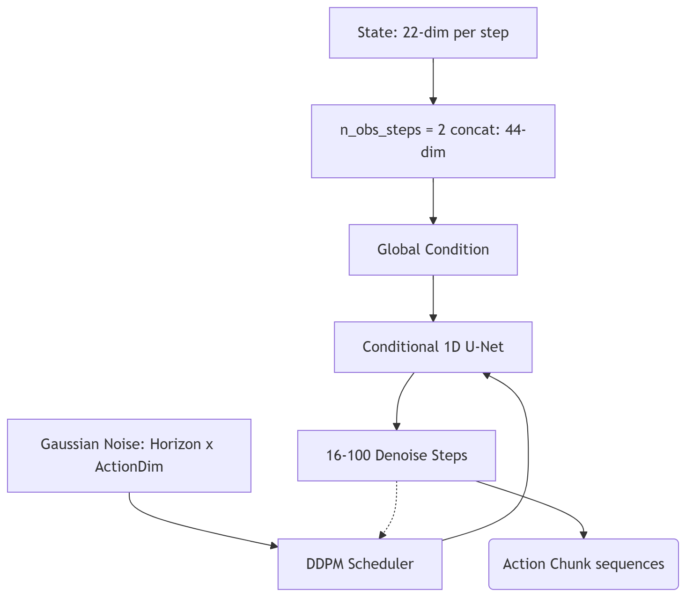
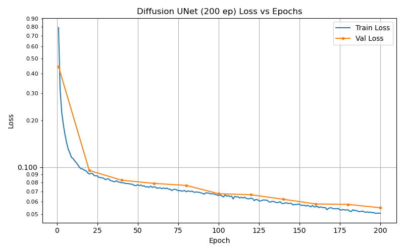
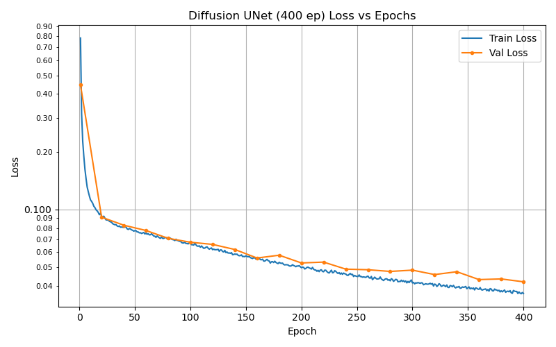
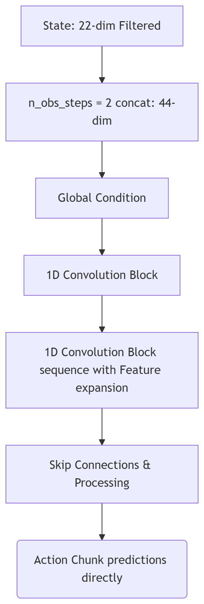
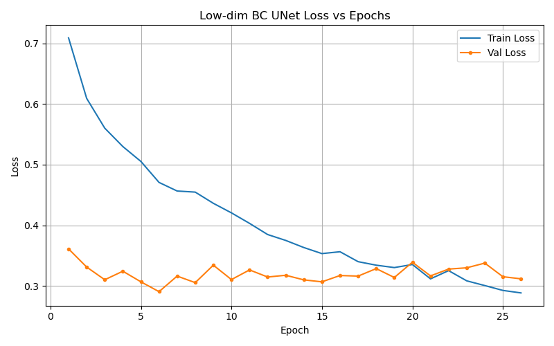
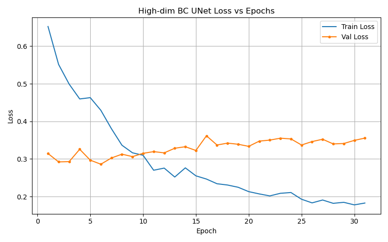

Project Overview
Model Architecture: TBD
Robot Platform: Franka Panda 7-DOF arm mounted on an Omron wheeled base with a torso lift joint
Objective: Open a cabinet
Training Metrics
The following table summarizes the hyperparameter tuning and the resulting performance during the simulated training environments.
| Experiment ID | Learning Rate | Batch Size | Total Timesteps | Convergence Epoch | Final Cumulative Reward |
|---|---|---|---|---|---|
| A | A | A | A | A | A |
Evaluation
The evaluation is based on the reported amount of grasp success rates, which is being checked by the _check_success() function. It uses the robocasa door value
| Model Architecture | Grasp Success Rate |
|---|---|
| Baseline Behavior Cloning MLP | |
| Vision Diffusion Chunk | |
| Diffusion UNet | |
| Behavior Cloning UNet (Low-Dim) | |
| Behavior Cloning UNet (High-Dim) |
Visualizations & Demos
Below are visual outputs of the agent's behavior during evaluation.
Baseline Behavior Cloning MLP


[Insert Video: Simulation Grasping Task]
Diffusion UNet (200 ep)


[Insert Video: Simulation Grasping Task]
Diffusion UNet (400 ep)

[Insert Video: Simulation Grasping Task]
Behavior Cloning UNet (Low-Dim)


[Insert Video: Simulation Grasping Task]
Behavior Cloning UNet (High-Dim)

[Insert Video: Simulation Grasping Task]